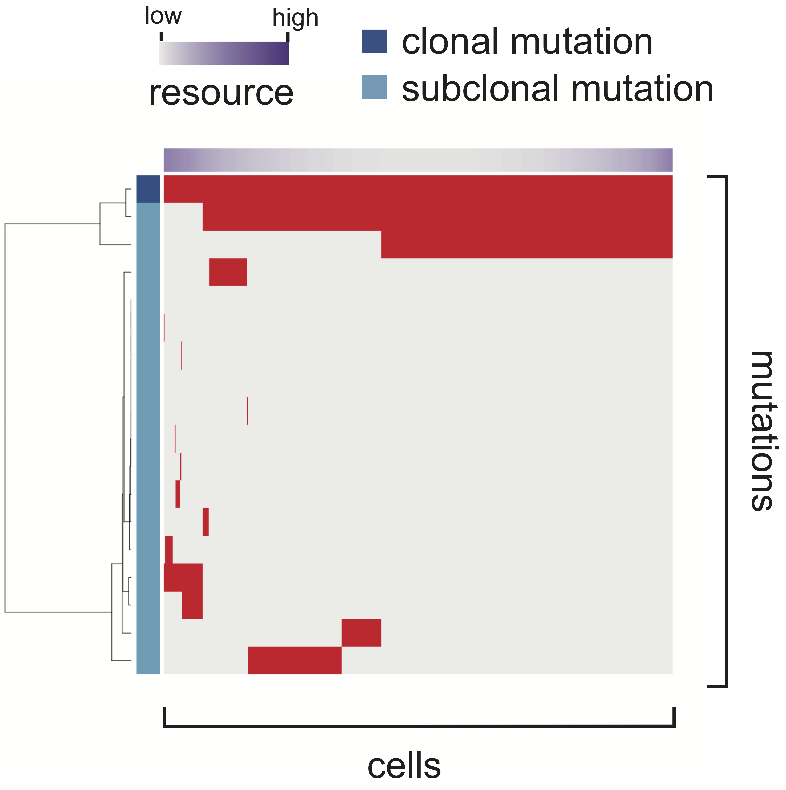

This is for a website for explaining a novel methodology for sensitivity analysis of agent-based simulation, MASSIVE (Massively parallel Agent-based Simulations and Subsequent Interactive Visualization-based Exploration). Employing a supercomputer, MASSIVE performs a huge number of agent-based simulations with a broad range of parameter settings and enables us to intuitively explore the massive results via an interactive visualization tool, the MASSIVE viewer.
As an explanatory example, this website presents massive results from agent-based simulations of cancer evolution on a one-dimensional lattice with free-ends. In each trials of the simulation, a cell divides with a probability of 104 until the population size reaches at P or time reach at 106. In each cell division, m mutations are generated on average and each cell can accumulate 3 mutations at maximum. Resources are provided from both the ends of the one-dimensional lattice and subject to exponential decays with a half-distance parameter d. Each mutation increases the cell division rate by f fold if no resource bias exists (i.e., with infinite d). In the presence of a resource bias, the cell division rate is calculated by further multiplying the resource distribution.
For convenience, we converted the parameters as follows: m′ = −log10(m), f′ = log10(f), p′ = log10(P) and d′ = log10(d). We then tested every combination of m′ ∈ {1, 2, 3}, f′ ∈ {0.1,0.2,0.3,··· ,1.0}, p′ ∈ {3,4,5} and d′ ∈ {1,2,3,4,5}, respectively. Namely, a larger m′ means a smaller mutation rate, a larger f′ means a stronger mutation effect, a larger p′ means a larger maximum population size, and a larger d′ means a weaker resource bias. For each parameter setting, we performed 50 Monte Carlo trials, from which we obtained averaged values of 11 summary statistics (listed in Table 1) for quantifying simulation results. Mutation profile heat maps (an example is provided in Figure 1) were also produced from 5 of the 50 Monte Carlo trials. All the results can be intuitively explored in the focused and comparative view modes of the MASSIVE viewer (see our paper for more details).
Table 1. a list of the summary statistics
| name | description |
|---|---|
| mutation count | number of all mutations |
| clonal mutation count | number of clonal mutations |
| subclonal mutation count | number of subclonal mutations |
| clonal mutation proportion | proportion of clonal mutation count |
| subclonal mutation proportion | proportion of subclonal mutation count |
| Shannon index 0.1 | Shannon index calculated with a mutation frequency cutoff of 0.1 |
| Shannon index 0.05 | Shannon index calculated with a mutation frequency cutoff of 0.05 |
| Simpson index 0.1 | Simpson index calculated with a mutation frequency cutoff of 0.1 |
| Simpson index 0.05 | Simpson index calculated with a mutation frequency cutoff of 0.05 |
| time | number of time steps when simulation is finished |
| population size | number of cells when simulation is finished |
Figre 1. an example of the mutation profile heat maps
